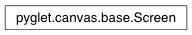

Screen Class¶
-
class
Screen(display, x, y, width, height)¶ A virtual monitor that supports fullscreen windows.
Screens typically map onto a physical display such as a monitor, television or projector. Selecting a screen for a window has no effect unless the window is made fullscreen, in which case the window will fill only that particular virtual screen.
The
widthandheightattributes of a screen give the current resolution of the screen. Thexandyattributes give the global location of the top-left corner of the screen. This is useful for determining if screens are arranged above or next to one another.Use
get_screens()orget_default_screen()to obtain an instance of this class.See also
Programming Guide - Screens